Camila Robledo
Desarrolladora de software
Aplicaciones móviles · APIs · Integración con hardware
Rosario, Argentina · Proyectos locales e internacionales
Mi forma de trabajar
Cada desafío es un punto de partida.
Aprendo rápido, tomo decisiones y transformo necesidades concretas en soluciones que funcionan.
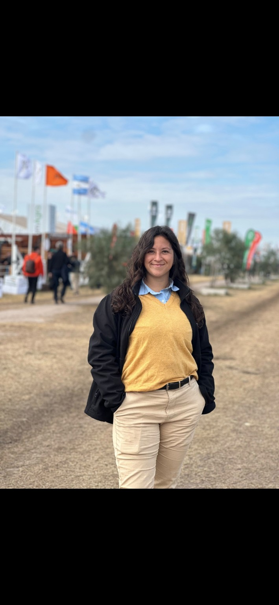
Sobre mí
Soy desarrolladora de software con experiencia en aplicaciones móviles, APIs e integración con hardware. Me caracterizo por ser resolutiva, aprender rápido y adaptarme a diferentes tecnologías y entornos.
Desde 2024 formo parte del Departamento de Ingeniería de Balanzas Vesta, donde participé en decisiones técnicas, lideré proyectos y desarrollé soluciones utilizadas en distintas áreas de la empresa.
Flutter + DartCiberdefensaHardware
Experiencia en Vesta
Software más allá de la pantalla
Desde julio de 2024 trabajo en el Departamento de Ingeniería de Balanzas Vesta, desarrollando aplicaciones que conectan software, hardware y procesos operativos.
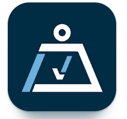
Proyecto 01Vesta+
Una aplicación, distintos dispositivos de pesaje.
El proyecto comenzó con la integración BLE del gancho BigB y evolucionó para incorporar CraneScale OCS-L y OCS-L1.
Mi participación
Lideré el trabajo colaborativo, organicé y audité tareas, y participé directamente en comunicación BLE, persistencia local, registros y evolución de interfaz.
Reto principalReconexión confiable y estados coherentes ante pérdidas de alcance.
Ver mirada técnica
Flutter y Dart, comunicación BLE, base local SQLite, funcionamiento offline y publicación en Google Play.
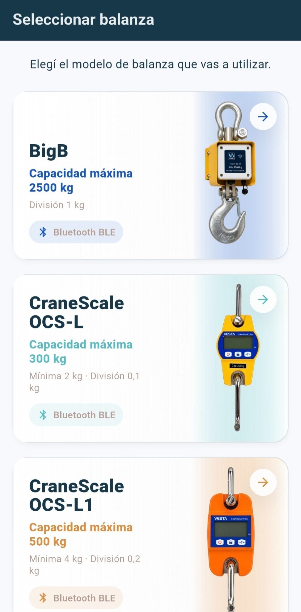
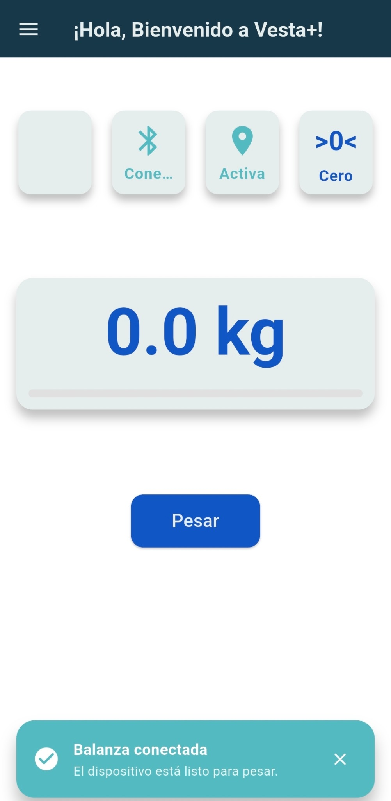
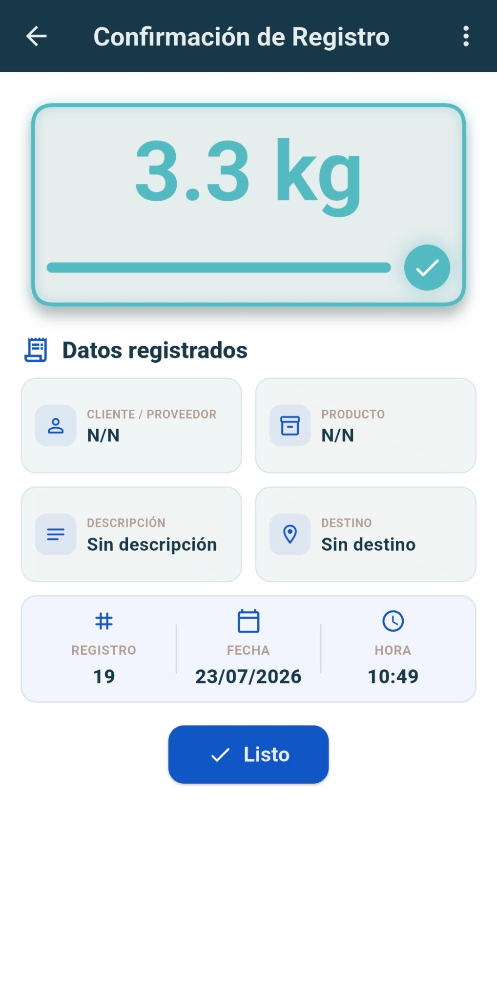
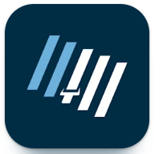
Proyecto 02PLOTrack
Tecnología aplicada a la cosecha
Aplicación para tablets utilizada en operaciones agrícolas de GDM: ensayos, franjas, pesajes, humedad, caudal, velocidad y geolocalización.
El problema
Descargar PLOTrack en Google Play
↗
Las interrupciones de Bluetooth podían afectar la continuidad del registro y provocar pérdida de información durante la operación.
PLOTrack · RS232
De Bluetooth a RS232
Adapté de manera autónoma la aplicación para utilizar una conexión cableada mediante el docking de la tablet. También realicé refactorizaciones internas y mejoras bajo plazos exigentes.
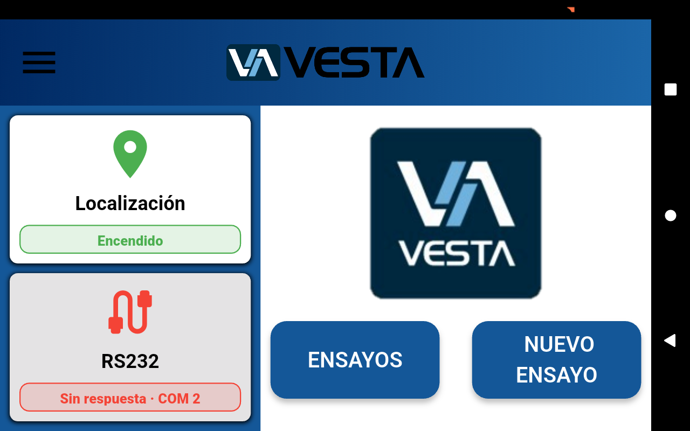
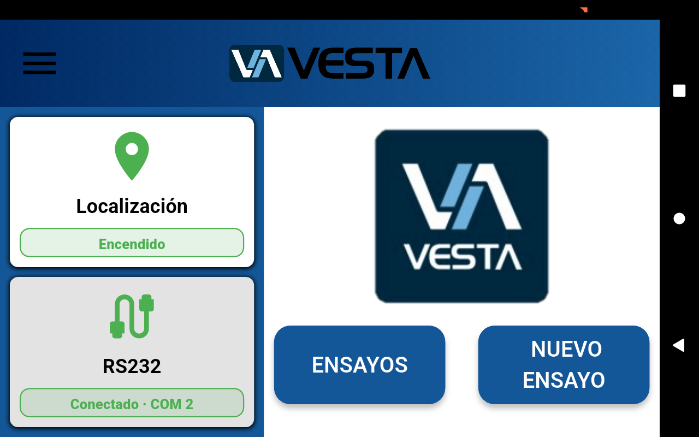
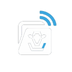
Proyecto 03NuBack
Información técnica al alcance de toda la empresa.
Centraliza estadísticas, cuentas, licencias, vencimientos, dispositivos y estados de conexión del sistema Nutrack.
Usuarios activosLicencias y vencimientosDispositivos utilizadosCuentas sin conexión
Mi participación
- Integración REST
- Autenticación JWT
- Procesamiento JSON
- Construcción de métricas
- Refactorizaciones internas
Otros proyectos
Más herramientas para necesidades específicas.
04
Aplicación publicada
BAC
05
Aplicación para visualizar balanzas de camiones por Bluetooth y consultar bruto, tara, neto y estados de operación.
Ver en Google Play ↗
Aplicación publicada
Vesta Config
Aplicación oficial para configurar y calibrar dispositivos Big B mediante Bluetooth, con lectura y ajuste de parámetros.
Ver en Google Play ↗Tecnología con impacto social
Voluntariado del Hospital Roque Sáenz Peña
Proyecto colaborativo para conectar necesidades concretas con personas dispuestas a ayudar.
Flutter + DartDiseño de MVP
El foco: que cada persona sepa qué donar, dónde hacerlo y qué impacto genera su ayuda.
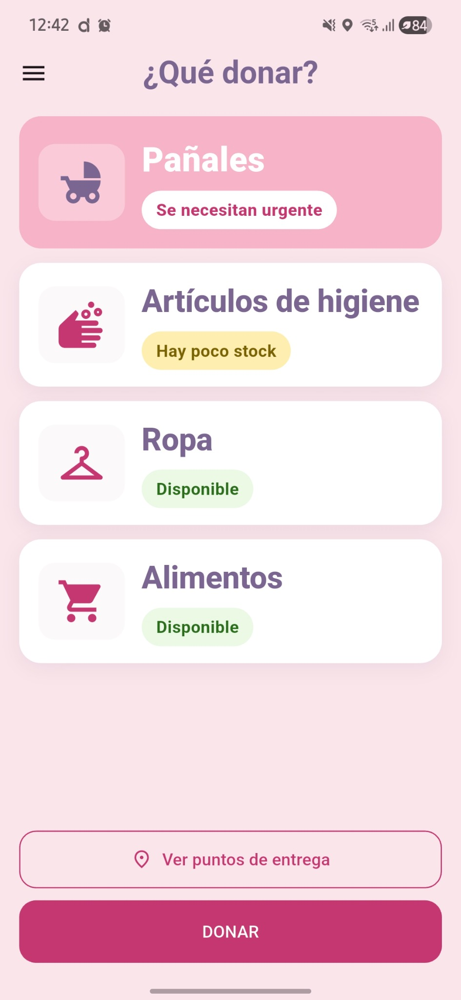
Diseño de experiencia
Una experiencia clara y cercana
Alcance del proyecto
Un prototipo funcional
Participé en la definición del MVP, los flujos de usuario y administración, la planificación funcional y el desarrollo de la interfaz.
Desarrollado
- Identidad visual
- Navegación
- Pantallas maquetadas
- Datos precargados
Pendiente al interrumpirse
- Firebase
- Google Maps
- Panel administrativo final
El proyecto se detuvo por falta de presupuesto, después de concretar análisis, diseño y desarrollo de la experiencia.
El comienzo
Todo empezó con una página web.
En 2023 desarrollé uno de mis primeros proyectos con HTML, CSS y JavaScript. La temática fue una elección libre y creativa que me permitió explorar el diseño, la estructura y la interacción de una experiencia web.
Formación destacada
Formación Full Stack
Proceso de Inducción de Desarrollador Full Stack · UTN Facultad Regional Rosario · 41 horas · 2025
HTML + CSSTypeScript + AngularC# + .NETAPIsSQLGitPOOTransacciones
La formación amplió mi mirada sobre frontend, backend, bases de datos y arquitectura.
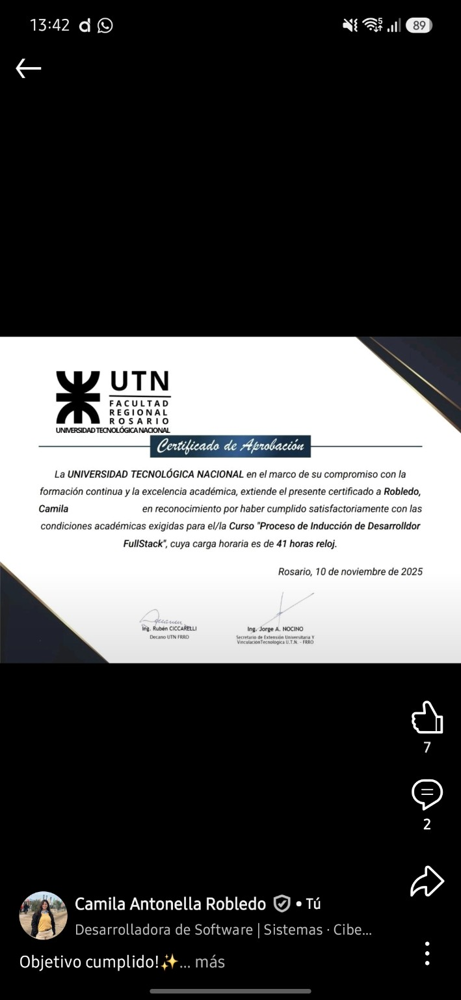
Desarrollo + seguridad
Construir también implica proteger.
Licenciatura en Ciberdefensa
FADENA · Universidad de la Defensa Nacional
Inicio: marzo de 2025 · Actualmente finalizando segundo año
Gestión de riesgosAmenazas y vulnerabilidadesSeguridad de la informaciónRedes y sistemasDerecho y normativaContinuidad y resiliencia
Perfil profesional
Un perfil en evolución constante
MobileHardwareAPIsAgroLiderazgoCiberdefensaImpacto socialAprendizaje
Mi perfil no está definido solamente por una tecnología, sino por mi capacidad para aprender, adaptarme y llevar soluciones a la práctica.
Comunicación y alcance
Idiomas y alcance
Abierta a colaborar en proyectos locales e internacionales, de forma remota, presencial o híbrida.
Hablemos
¿Creamos algo que resuelva un problema?
Estoy abierta a conversar sobre proyectos, colaboraciones y oportunidades profesionales.
Camila Robledo
Desarrolladora de software · Rosario, Argentina
+54 341 276 6324